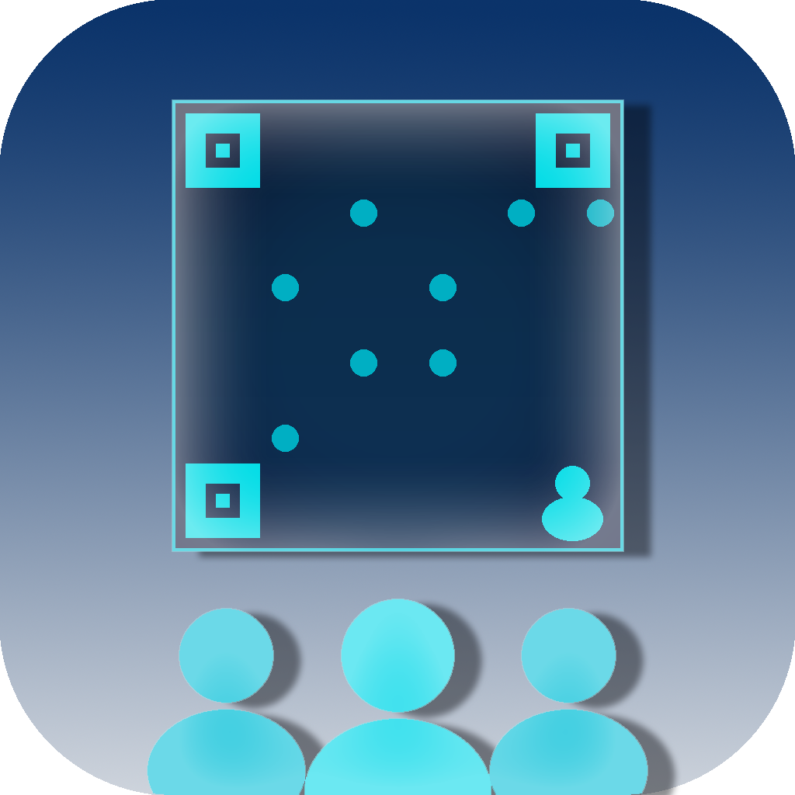
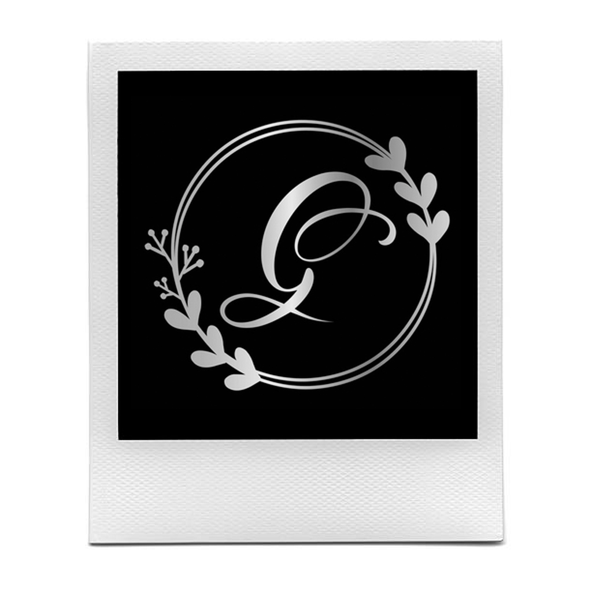

iOS Apps by Joe Ghalam

Collaborative event notes and attendee tracking for recruiting and networking events. Real-time shared notes powered by iCloud.

Turn your iPhone or iPad into an elegant digital photo frame. Displays your Apple Photos albums as a beautiful, customizable slideshow.
Search, sample, and save online radio stations from around the world. Find stations by name, call letters, frequency, or proximity.